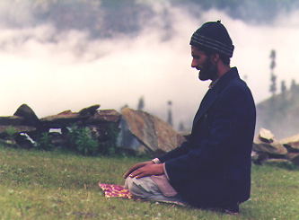

A Poguli folktale told by Abdul Jabbar Katoch "Manzoor",
edited and translated by Peter Edwin Hook

katha wanani-wO:l-manzu:r
story teller "Manzoor"
16 July 1989
Volvog, Pogul-Peristan, J & K, India
arab-sani mulkus manz yakh ami:r ba:paer rahati Ohatu-hu:. 1.
Arabia-GN land-DT in one rich merchant living was-PST
In Arabia long ago lived a wealthy merchant.
yabala arb-us manz ka:l pe: ta yen ba:paer kO:l-sun
when Arabia-DT in drought fell then this-ER merchant-ER drought-GN
When Arabia was suffering from a drought, the merchant
tyenaer maka:bala ko zi saer ja:da:d ta daulat mulk-us
such-a response did that all property and wealth country-DT
responded (by taking) all his property and wealth (and)
bAET-kery panun mulkh tra:ye ci:n sani mulk-us manz wo:t. 2.
divid-ing self's land leaving China-GN land-DT in arrived.
dividing it up for his country left it and went to China.
ci:n sani ba:dsheh yu ba:paer panani bOgus manz ba:gwa:n rashtu-in. 3.
China-GN king-ER this merchant self's garden in gardener kept-3s
The king of China employed the merchant as his gardener.
ya-s ba:paer-us mil-ni yak dusa ra:za-sen dwe:by gyeh
this-DT merchant-DT meet-INF one day king-GN washerwoman home
One day the king's washerwoman came to his home in the garden,
ba:gus manz a:y. 4. tyaenya eth yakh peThmet kuRamahani pashti
garden in came. she-ER here a beautiful woman saw
to meet this merchant. Here she saw a beautiful woman
ya ba:paer-us zana:n ehiti:. 5. dhAu nya:-nya ta ra:z-us khObur
who merchant-DT wife was running took-3s and king-DT news
who was the merchant's wife. She went running to the king with
deci-nya zi tini bOg-us manz tihani peThmet kuRamahani tini
gave-3s that your garden in such-a beautiful woman your
the news that in your garden (belonging) to your servant is a
nokar-us thi ya.zi ra:za-sani mehal-us manz-i: swe:bi-hi:. 6.
servant-DT is who king-GN palace-DT in-EMP grace-would.
woman beautiful enough to grace the palace of a king.
ra:za wan-ni laegu-sa zi ada una kut kar-am. 7. kinaer
king say-INF began-3sD that more now what do-3pF how
The king said to her, "What shall we do about this? How shall we
a:n-ma-n? 8. dra:lya dwaeba jo-s yu hun-chwas na:,
bring-1pF-3sA crafty washerwoman-ER said-3sD this hear-are not
get her (here)?" The crafty washerwoman said, "Don't you know?
ta:zikista:nus manz yakh sha:l khely gyemu-chu. 9. su te:r dusai
Tadzhikistan-DT in one wolf wild-ing gone-is he there daily
In Tadzhikistan there is a wolf who has gone mad. Every day he
yakh mahun kha:l chu. 10. as yu swe:c-ker ba:paer tyurhu pyaen-ma-n
one man eat is we it thinking merchant there send-1pF-3sA
consumes a man. With this in mind if we send the merchant there
ta ya ran a:n-ma-s mehlus manz wa:t-ely. 11.
then this woman bring-1pF-3sD palace in arrive-CAUSing
then we can get this woman into the palace.
ra:z-an yu ba:paer tshad-al-tu. 12. jue:-s-ni, ti, ha:se,
king-ER this merchant call-CAUS-PST said-3sD-3sE you-DT sir
The king had the merchant called and said to him, "You, Sir,
ta:jikasta:nus manz sha:l an-ni gas-nu chu. 13. ti as yana:m
Tadzhikistan-DT in wolf kill-INF go-INF is you-DT we prize
have to go Tajikistan to kill a wolf. We will give you a reward
dyawam agar ti su en-le. 14. ra:za ta dwaeba sughaRa
give-1pF if you-ER it kill-pour king-ER and dhoban-ER schemes
if you succeed in killing it. The king and the washerwoman
kyeya zi yu terah-terhu-i: gyes, yu kor duyi phir yew-i? 15.
made that he there-there-EMP go-3sg he where yet again come-3sF
planned that he would die right there; how would he come back?
ba:paer nis go: ta:jkista:n-us. 16. wa:t-ite-i ba:paer ter-iky
merchant exit went Tajikistan-DT arriv-ing-EMP merchant there-of
The merchant left for Tajikistan. As soon as he got there he
ya ha:lat ba:l-ci-n ta kha:l-al-ni a:o. 17. patoh-la:kan
what condition see-PST-3sE and mad-CAUS-INF came afterwards
saw what the situation (was) there and he was terrified. Then he
kwali tsha:o bim-tu. 18. sha:l hU hU kar-ti a:o. 19. ba:paer kwal-is
tree shade sit-PST wolf hu hu mak-ing came. merchant tree-DT
sat down under a tree. The wolf came making a hoo-hoo sound.
ukhsu:t. 20. a:hat-us manz shamshe:r ti a:ha-ca-ha:-s. 21.
climbed hand-DT in sword also be-PST-PST-3sD
The merchant climbed the tree. He had a sword in his hand, too.
phulwatai-di:pai gyand-ni laega, sI:t-iy ba:paer yas sha:l-us
thrusting-feinting play-INF began with-EMP merchant the wolf-DT
They began to spar and fence. With this the merchant severed
maT twal-ti. 22. ta:jiksta:n wa:t-al-ci-n. 23. ra:za yi maT
head lift-PST Tajikistan arrive-CAUS-PST-3sE king this head
the wolf's head. He took it back to Tajikistan. The king was
twely-kery pesh-kery tamali go. 24. kwiD yana:m dic-as-in
lifted-having seen-having amaze went girl prize gave-3sD-3sE
amazed to see the severed head. He gave his daughter as reward
ta ba:paer ci:n-us phir-tu. 25. ci:n-sun ra:za dwe:b
and merchant China-DT return-ed China-GN king-ER washerwoman
and the merchant went back to China. The king of China sent the
ba:paer-us gyeh ba:l-al-ni pyaen-c-in. 26. te:r duyakh egama
merchant-DT home look-CAUS-INF send-PST-3sE. there another first
washerwoman to the merchant's house to look. There she saw
a:hata praw pae-ni-waely kuR-mahan-ekh pash-ti. 27. ra:zas khObur
than light fall-INF-which girl-man-one see-PST king-DT news
another woman more radiant than the first one. She announced to
dic-an-ya zi ba:dsa:h a:lam, yu kam rawda:d chu! 28. yen ba:paery
gave-3sE-f that Bad-shah world this what matter is this merchant
the king, "Lord of the Universe, what miracle is this!? Today
a:z egma a:hata ja:da peTh kuRa-mahani AEnt. 29.
today first than more pretty girl-man brought.
the merchant brought a woman more beautiful than the first one."
una kam sabi:l kar-am su an-al-ma-ha:-n
now what plan make-1pF he kill-CAUS-3pF-PST-3sA
"Now what plan shall we make that we might have him killed?
ta kyenaer. 30. dwaeba jO:-as zi tyas ba:paer-us wan-am
and how washerwoman said-3sD that that merchant-DT say-1pF
And how?" The washerwoman said to him, "We'll tell the merchant,
zi tu ity-akh la:l nivi ta ihana-i: sat la:l kOts a:ni. 31.
that you here-one ruby take and such-EMP 7 rubies somewhere get.
'Take this ruby and get seven more just like it from somewhere.
na a:n-us yi-i: mawt cha-th.'" 32. ba:paer-us hukum banu-ut
not bring-2sF this-EMP death is-2sD merchant-DT order make-PST
If you don't, that will be your death.'" The order was given to
ta su yas ma:ba:nas nis-tu. 33. dhAw chu dhAw chu ta yeksa
and he this purpose-DT leave-PST going is going is and one
the merchant and he set out on this mission. He goes and goes
ja:yi wO:at. 34. te:r yeny yakh le:yas pash-tu. 35. le:s-us manz na:ga
place arrived there he-ER one gully see-PST gully-DT in spring
and arrives at a place. There he saw a gully. In the gully there
pAI ja:ri chu. 36. yas pAyus sI:ty la:l anta rahatai dhAw chi. 37.
water going is. this water with rubies end without flowing are
is a spring out of which rubies are flowing without stopping.
yen la:l-an tA: thapa dica na. 38. yu go ba:l-ni zi yAw la:l
he-ER rubies-DT till grasp gave not he went see-INF these rubies
Before picking any up he went to see where the rubies were
korah warha dhAw cha. 39. eth yakh dhar thi. 40. yas manz yakh pari-zan
where from going are there one cave was it in one fairy-like
coming from. There was a cave. In it a girl as beautiful as a
kwiD katal kar-ni a:-meth. 41. yaka pa:sa zinda kar-ni kica ka:gad
girl kill do-INF come-PP one side alive make-INF for paper
fairy had been killed. To one side was a paper (with directions)
yikh likh-tu-mut chu. 42. ba:paer wa:ra ba:l-ti ta yen ya pari-zan
one write-PST-PP is merchant well look-PST and he-ER the fairy
written (on it) for bringing to life. The merchant studied it
kwiD zinda kery le:. 43. ya husaer ge. 44. jwe:-s-ni kOra
girl alive make poured she conscious went. said-3sD-3sE where
carefully and revived the fairy-like girl. She awoke. She said,
wOrh ae-s-im? 45. iti yakh mahana-kha:w dyaw raha chwa-th. 46.
from came-2s-1sD here one man-eating demon live is-2sD
"Where did you come from for me? A man-eating monster lives here
su yew-i ta ti khael-i-th. 47. tu nashi! 48. ba:paer shamshe:r
reT
he come-3sF and you-DT eat-3sF-3sD you flee merchant sword take
He'll come and eat you. Run away!" The merchant took his sword
ker aT-us patani ja:yi ke:. 49. yat-kuwa:l dyaw a:w. 50.
doing wall-DT behind place did this-until demon came
and put it behind the wall. Just then the demon came.
kwiDa pruts-tw-in ya kam kath banu-it? 51. tu kyenaer zinda gyaes? 52.
girl-DT ask-PST-3sE this what thing happened you how alive went
He asked the girl, "What happened? How did you become alive?
hU:! 53. wani! 54. yu wan-nu-yi ahatu-hu: zi ba:paer talwa:ra sI:ty
hu speak this say-INF-EMP was-PST that merchant sword with
Hoo! Speak!" He was just about to say this when the merchant
dyaw-us maT bakha ke:-ny. 55. ya dab-ta-met kwiD a:za:d ge:. 56.
demon-DT head aside made-3sE this oppress-ed-PP girl free went
cut off the demon's head with his sword. The girl was free.
una ya ma:l-es laba wa:t-aly-ce-n. 57. la:l ti twal-te-n. 58.
now she father-DT near come-CAUS-PST-3sE rubies too lift-PST-3sE
Now he delivered her to her father. He picked up rubies, too.
ya sau:diya sani ra:za sen kwiD ehati-hi:. 59. ra:z-an ya duyi
this Saudi GN king GN girl was-PST king-ER she again
The girl was the Saudi king's daughter. The king saw her once
pash-ti. 60. una ya yas ba:paer-us dAy le:-n. 61. ba:paer la:l
see-PST now she this merchant-DT give poured-3sE merchant rubies
again. Now he gave her to the merchant. The merchant delivers
ci:n sani ra:z-as wa:t-al chu. 62. yas hil-as ra:za pathur pe:. 63.
China GN king-DT arrive-CAUS is this time-DT king floor fell
the rubies to the king of China. This time the king fell down.
toba paR ten zi mi:n ya kha:m tamna: kwirh? 64. yu kOtsi:
toba read he-ER that my this vain desire where this anywhere
He gave up his desire as pointless: "This man didn't die.
phaT-tu na. 65. yu ba:gus manz wO:t. 66. dwe:b drael patai gey-as.
67.
die-PST not he garden in came washerwoman clever after went-3sD
He's come back to the garden." The clever washerwoman followed.
tenya duyi cimi pari-zan kwiD yakh pash-ti. 68. una ba:paer-us ca:y
she-ER yet third fairy-like girl one see-PST now merchant-DT three
She saw yet a third girl like a peri. Now the merchant has three
kuRmahanya cha. 69. dawlat ti cha-s. 70. dwe:b cimi khabur gin
wives are wealth too is-3sD washerwoman third news taking
wives. He is rich, too. The washerwoman comes with this third
wa:ti thi. 71. ra:z-as jo-anya zi he ba:dsha:h-a:lam! 72. tini ba:paer
arrive is king-DT said-3sE that oh Lord-All! your merchant
news. She told the king, "Oh Lord-of-All! Today your merchant
az egaman din kuR-mahanyan ahata ti ja:da peThmet kwiD yakh aent 73.
today first two girl-men than even more pretty girl one brought
brought a girl even prettier than the first two women...
sa hay a:n-si-hi:-s! 74. yenya dwe:ba di yana:m eggi:
she if bring-2sF-PST-3sD this-ER washerwoman two rewards already
If you were to bring her (here)!" This washerwoman had already
ra:z-as khobara dAy dAy nya-mata ahata-ha:. 75. una duyi ni-wi-hi:. 76.
king-DT news give give take-PP was-PST now more take-3sF-PST
gotten two rewards by giving news to the king. Now she would get
magar ra:z-an tOba paR-ti-mati ahata-ha:. 77. jwe:-s-ni ba:paer-us
but king-ER toba read-PST-PP was-PST said-3sD-3sE merchant-DT
another one. But the king had sworn off. He said, "The merchant
panana takdi:r ta mi panana. 78. a:U, ba:ba:, ha:r khai go:-s. 79.
self's destiny and me self's I father defeat eat went-1sPST
has his fate and I have mine. Baba, I've lost (this contest).
yut a:U kancan-es tama:h kar-a tyut khwada: tyas ja:da de chu. 80.
more I someone-DT envy do-1sF more God him-DT more give is
The more I envy someone, the more God gives to him."
pata yu ra:za yakh aelim banutu-hu: ta yas dra:lya
then this king one wise-man became-PST and this clever
Later the king became a wise man and cut off the clever washer-
dwaeba maT twal-c-en. 81.
washerwoman-DT head lift-PST-3sE
woman's head.
Abbreviations:
A........accusative suffix ER..........ergative case
CAUS.....causative affix F.............future tense
D.............dative suffix GN.........genitive case
DT.............dative case INF.............infinitive
E...........ergative suffix PP.........past participle
EMP....emphatic particle PST............past tense
Glossary in Devanagari order:
ada...........more, else. 7.
aelim.........wise, wise man. 81.
agar..........if. 14.
a:hacaha:s...see a:s.
a:hat, m.....hand. -us, dt.sg., 21.
a:hata........than. 27, 29, 73.
a:hataha:.....see a:s.
a:hatuhu:....see a:s.
a:lam, m?...world, universe. 28, 72.
a:meth.......see ye.
ami:r.........rich. 1.
an............kill. -ni, purp.inf., 13. en, ger., 14.
..anal........caus. -maha:n, 1pl>3sg.sbjnc., 30.
a:n...........bring. -i, imper.sg., 31. -us, 2sg.fut., 32. -man,
1pl>3sg.fut., 8.
...............-mas, 1pl>3sg.dt.fut., 11. -sihi:s, 2sg.sbjnc. with
3sg.dt.suf., 74.
...............aent, f.sg.pst., 29, 73.
ant, m.......end. -a, ob.sg., 37.
a:o...........see ye.
arab.........Arabia. 1. arbus, dt.sg., 2.
as............we. nm., 11, 14.
a:s...........be. a:hacaha:s, f.sg.pst./m.3sg.dt.suf., 21. a:hataha:,
m.pl.pst., 7.
..............?f.sg.pst., 77. a:hatuhu:, m.sg.pst., 55. ehiti(hi):,
f.sg.pst., 5, 59.
..............Ohatuhu:, m.sg.pst., 1. chath, f.3sg.pr. with 2sg.dt.suf.,
32.
..............chas, f.3sg.pr. with 3sg.dt.suf., 70. cha, chi, m.3pl.pr.,
37, 39, 69.
..............chu, m.3sg.pr., 9, 10, 28, 34, 36, 42, 62. chwath,
m.3sg.pres.
..............with 2sg.dt.suf., 46. chwas, f.2sg.pr., 9. thi, f.3sg.pr.,
6, 40, 71.
V-nu a:s....have to V. ti V-nu chu, you have to V, 13.
aT, m?.....wall. -us, dt.sg., 49.
a:U.........I, nm., 79, 80. mi, dt., 78.
a:w.........see ye.
a:y..........see ye.
a:z..........today. 29, 73.
a:za:d......free. + gas, become free, 56.
ba:ba:......father. 79.
ba:dsha:h, m...king. nm.sg.; -a:lam, Lord of the Universe, voc.sg., 28,
72.
.............ba:dseh, er.sg., 3.
bAET-kery...see bA:T
ba:g, m....garden. -us, dt.sg., 4, 66. bOgus, dt.sg., 3, 6.
ba:gwa:n, m....gardener. nm.sg., 3.
bakh, f?....side, edge. -a, dt.sg., aside. + kar, cut off, 55.
ba:l.........look, see. -cin, 3sg.f.pst./3sg.m.er.suf., 17.
.............-ti, f.sg.pst., 43. -ni, inf., 39.
..ba:lal.....caus. -ni, inf., 26.
ban.........be made, be given. banu:t (from banutu), m.3sg.pst., 33.
banuit
.............(from banuti), f.3sg.pst., 51. banutuhu:, m.3sg.pst., 81.
ba:paer, m....merchant. nm.sg., 1, 3, 11, 12, 16, 20, 25, 62; (-y),
er.sg., 2,
.............17, 29, 43, 49, 55, 73. -us, dt.sg. 4, 5, 22, 26, 31, 33, 61,
69, 78.
bA:T.......divide, distribute. baet-kery, ger., 2.
bim.........sit, sit down. -tu, m.sg.pst., 18.
bOgus.....see ba:g
ca:y........three. 69.
cha, chi, chu...see a:s.
chwath.....see a:s.
cimi........third. f.nm.sg., 68, 71.
ci:n, m?....China. ob.sg., 2, 3, 26, 62. -us, dt.sg., 25.
dab.........press; oppress. -tamet, f.sg.pst.part., 56.
dawlat, f....wealth, 2, 70.
dAy........see de.
de..........give. + chu, m.3sg.pr., 80. dica, f.pl.pst., 38. dicanya,
.............f.sg.pst. with f.3sg.er.suf., 28. dicasin, f.sg.pst. with
3sg.dt.suf. and
.............m.3sg.er.suf., 25. deci, f.sg.pst., 6. day, ger., 61, 75.
dyawam, 1pl.fut., 14.
deci........see de.
dhar, f.....cave. nm.sg., 40.
dhAw........go; run; flow. -chu, m.3sg.pr., 34; -chi, -cha, m.3pl.pr., 37,
39.
.............running, m. - ni, go running, 6.
di...........two. 75. -n, dt.pl., 73.
dica(nya)..see de.
drael.......see drO:l.
drO:l.......clever. dra:lya, f.sg.er., 9; f.sg.dt., 81. drael, f.sg.nm.,
67.
dus, m.....day. ob.sg., 4.
dusai.......daily, 10.
duyakh.....another. nm.sg., 27.
duyi........again. 15, 60, 68. another. 76.
dwe:b(y), f...washerwoman. m.sg., 4, 26, 67, 71.
.............dwaeba, er.sg., 9, 15, 31, 75; dt.sg., 81.
dyaw, m...demon. nm.sg., 46, 50. -us, dt.sg., 55.
dyawam....see de.
eg(a)ma....first. f.sg.obl., 27, 29. -n, dt.pl., 73.
eggi: .......already. 75.
ehiti: .......see a:s
ekh.........a (suffixed indef. article). 27, 68, 73. see yakh.
en...........see an.
eth..........here. 5, 40. see iti.
gas..........go; marker of perfective aspect. -nu, m.sg.inf., 13. ge,
f.sg.pst., 44, 56;
.............geyas, f.sg.pst. with 3sg.dt.suf., 67.
go, m.sg.pst., 16, 24, 39.
.............gos, m.3sg.pst., 79. gyemu (from gyemut), m.sg.pp., 9. gyes
(from gasi), 3sg.fut.,
.............15. gyaes, f.2sg.pst., 52.
ge(yas).....see gas.
gin..........take. ger., 71.
go(s)........see gas.
gyaes.......ee gas.
gyand.......play. -ni, inf., 22.
gyeh........see gyoh.
gyemu......see gas.
gyes........see gas.
gyoh........home. gyeh, f.sg.nm., 4, 26.
ha:lat, f.....situation. 17.
ha:r, f?......loss, defeat. + kha:l, accept defeat, 79.
ha:se........particle of respect; sir. 13.
hay..........if. 74.
he............oh. 72.
hil, m?......time. -as, dt.sg., 63.
hU hU......hoo-hoo. 19.
hU: .........hoo. 53.
hukum, m...order. nm.sg., 33.
hun..........hear; know, 9.
hushaer.....conscious. + gas, become conscious, come to., 44.
i: ............emphatic particle, 6, 22, 32, 55. (after pres.adv.p.) as
soon as, 17.
ihanu........such a. -i:. identical. ihanai:, m.pl.nm., 31.
iti............here. 46.
..ityakh.....like this (adj). 31.
ja:da.........more. 73, 80.
ja:da:d, f....property, 2.
ja:ri..........continuing; going on. 36.
ja:y, f.......place. -i, dt?sg., 34, 49.
jo, jos.......see zap.
joanya.......see zap.
jue:(sni).....see zap.
ka:gad, m...paper. nm.sg., 42.
ka:l, m?.....drought, 2. kO:l, obl.sg., 2.
kam.........who; what. f/m.sg.nm., 28, 51.
kancan......someone. -es, dt.sg., 80.
kar..........do, make. -a, 1sg.fut., 80. -am, 1pl.fut., 7, 30. -ni, inf.,
42.
.............-ni, pass.part., 41. -ti, pres.adv.p., 19. ke:(ny), f.sg.pst.
(with
.............3sg.er.suf.), 49, 55. kery, ger., 43. ko, m.sg.pst., 2.
kyeya, f.pl.pst., 15.
katal, m....murder.
..katal kar..kill. -ni, pass.part., 41.
kath, f......thing. nm.sg., 51.
ke:(ny).....see kar.
kery........see kar.
-ker(y).....extended marker of gerund (from kari), 2, 49.
kO:l........see ka:l
khabur, f..see khObur.
khal........go mad. khely, ger., 9.
..kha:lal...terrify? kha:lalni ye, be terrified. 17.
kha:l........eat. 10. khaelith, 3sg.fut. with 2sg.dt.suf., 47. khei, ger.
79.
..kha:w....eating (in cmpnds). 46.
kha:lal......see khal.
kha:m......vain. 64.
kha:w......eating (in cmpnds). 46.
khei........see kha:l.
khely.......see khal.
khObur, f..news. nm.sg., 6, 28, 71. -a, nm.pl., 75.
khwada:, m..God. 80.
kica........for; in order to. 42.
kinaer......how. 8, 30, 52.
ko..........see kar
kor(h).....not at all, 15. where. kora(h), 39, 45. what kind of. kwirh
(from korih), f.sg., 64.
kOts.......somewhere. 31. -i:, anywhere, 65.
kuRamahani, f. woman. nm.sg., 5, 6, 29. kuRmahan-ekh, a woman, nm.sg., 27.
.............kuRmahanya, nm.pl., 69. kuRmahanyan, dt.pl., 73.
kut.........what, 7.
kwal, f?...tree. -i, gn.sg., 18. -is, dt.sg., 20.
kwiD, f... girl. 41, 43, 56, 68, 73. -a, dt.sg., 51.
.............daughter. 25, 59.
kwirh......see kor(h).
kyenaer....see kinaer.
kyeya......see kar.
laba........near, to; at the house of. 57.
laeyas, m..gully; slide. nm.sg., 35. le:sus, dt.sg., 36.
la:g........begin. laega, m.pl.pst., 22. laegu, m.sg.pst., 7.
la:l, m.....ruby. nm.sg., 31. nm.pl., 31, 37, 39, 58, 62. -an, dt.pl., 38.
le...........pour; marker of perfective aspect. 2sg.sbjnc., 14. le:,
.............f.sg.pst., 43; le:n, f.sg.pst. with m.3sg.er.suf., 61.
le:sus......see laeyas.
likh........write. -tumut, m.sg.nm.pst.part., 42.
ma:ba:n, m?...purpose. -as, dt.sg., 33.
magar......but. 77.
mahun, m...man. 10.
mahana-kha:w...man-eating. 46.
maka:bala, m...response, 2. - kar, respond, react, 2.
ma:l(u), m...father. -es, dt.sg., 57.
manz.......in, 1, 2, 3, 4, 6, 9, 11, 13, 21, 36, 41, 66.
maT, f.....head; neck. 22, 24, 55, 81.
mawt, f....death. 32.
mehal, m...palace. -us, dt.sg., 6, 11.
mi..........see a:U.
mil.........meet. -ni, inf., 4.
mi:n........see myun.
mulk, m...country, land. -h, nm.sg., 2. -us, dt.sg., 1, 2.
myun......my, mine. mi:n, f.sg.nm., 64.
na..........no, not. 32, 38, 65.
..na:.......particle soliciting agreement. 9.
na:ga, m?..spring. 36.
nash.......run away, flee. -i, imper., 48.
ni..........take, take away. -vi, imper.sg., 31. -wihi:, 3sg.sbjnc., 76.
.............nya:ni, m.sg.pst.-3sg.er., 6. nya:mata, m.pl.pst.part., 75.
nis.........go out; leave. ger., 16. -tu, m.sg.pst., 33.
nokar, m...servant. -us, dt.sg., 6.
nya: .......see ni.
Ohatu......see a:s.
paeniwaely...see pe:.
pAI, m.....water. nm.sg., 36. payus, dt.sg., 37.
panani......see panun.
panun......refl.poss.adj., self's, own. nm.m.sg., 2. panana, f.sg.nm., 78.
.............panani, ob.sg., 3.
pata........afterwards. 81.
..patai......after, behind. + gas, follow. 67.
..patanu....behind (adj). patani, f.sg.ob., 49.
pathur, m?...floor. down. 63.
patohla:kan...afterwards. 18.
paR.........read. ?f.sg.pst., 64. -timati, f.sg.pst.part., 77.
pari, f......peri, fairy princess.
..parizan...like a fairy princess. nm.sg., 41, 43, 68.
pash........see. -ti, f.sg.pst., 5, 27, 60, 68. -tu, m.sg.pst., 35.
pesh-kery,
.............ger. 24.
pa:s, m?...side. -a, to the side, ob.sg., 42.
pe: ........fall. m.3sg.pst., 2, 63. paeni-waely, falling, casting, f.sg.,
27.
pesh.......see pash.
peTh......beautiful. -muth, nm.sg.m. peTh(met), nm.sg.f., 5, 6, 29, 73.
phaT......die. -tu, m.sg.pst., 65.
phir.......back. 15.
phir.......return. -tu, m.3sg.pst., 25.
phulwatai-di:pai, f...thrusting and feintind (in swordplay). 22.
praw, m?...light; radiance. 27. praw pe:, be gorgeous.
pruts......ask. -twin, m.3sg.pst./3sg.er.suf., 51.
pyaen.....send. -cin, f.3sg.pst./m.3sg.er.suf., 26.
.............-man, 1pl>3sg.fut., 11.
rah........live; stay. -a chwath, m.3sg.pres. with 2sg.dt.suf., 46. -ati,
rahatai....without. 37.
ran, f.....woman. nm.sg., 11.
ras........keep; employ. -tu, m.sg.pst., 3.
raT........seize; hold. reT-ker, ger., 49.
rawda:d, m...matter; miracle? nm.sg., 28.
ra:za.......king. nm.sg., 7, 24, 63, 81. er.sg., 12, 15, 26, 60; ra:zan,
.............er.sg., 77. ra:za, ob.sg., 4, 6, 59. ra:z-as, -us, dt.sg., 6,
28, 62, 72, 75.
sa..........she. nm.sg., 74. tenya, tyaenya, er.sg., 5, 68.
sabi:l, f...plan, scheme. nm.sg., 30.
saer.......see sOr
sha:l......wolf, jackal. nm.sg., 9, 13, 19. -us, dt.sg., 22.
shamshe:r, f...sword. nm.sg., 21, 49.
sani.......see sun
sat........seven. 31.
sau:diya...Saudi Arabia. 59.
sen........see sun
sI:t(y).....with. 22, 37, 55.
sOb.......grace. swe:bihi:, f.sg.pst.cond., 6.
sOc.......think. swe:c-ker, ger., 11.
sOr........all, entire, m.sg. saer, f.sg., 2.
su.........he. nm.sg., 10, 14, 30, 47; ten, er.sg., 64. that. tyas,
.............m.sg.dt., 31, 80.
sughaRi, f...scheme. sughaRa, nm.pl., 15.
sun........possessive postposition. m.sg.obl(?), 26. sani, obl.sg., 1, 2,
3,
.............6, 59, 62. sen, f.sg., 4, 59. sun, m.sg.nm., 2.
swe:b......see sOb.
swe:c......see sOc.
ta...........conj. then, 2. and, 6, 15, 17, 25, 30, 33, 34, 43, 47, 78,
81.
ta: .........until; up to. 38.
takdi:r, f...fate; luck. 78.
talwa:r, f...sword. -a, dt.sg., 55.
tama:h, m?.. envy. 80. -khor, envious, greedy.
tamal.......be astonished. -i, ger. 24.
tamna:, f...desire; obsession. 64.
ta:zikista:n, m...Tajikistan. nm.sg., 23. -us, dt.sg., 9, 13, 16.
tenya......see sa.
te:r........there. 10, 27, 35. tyurhu, m.sg., 11.
..terah terhui...right there. m.sg., 15.
..teruk.....of there. teriky, f.sg., 17.
thap, f.....a grab. -a, nm.pl., 38.
..thapa di...pick up (lit: give a grab at).
thi........see a:s.
ti..........also. 21, 58, 70. even. 73.
ti..........see tu.
tihani.....such a. nm.sg.f., 6.
tini........see tyun.
toba, f....tobah. + par, give up, call it quits; forswear. 64, 77.
tra:v.......leave behind, quit. tra:ye, ger., 2.
..tra:ye....see tra:v.
tshad.......call. tshadaltu, m.sg.pst.caus., 12.
tsha:o, m...shade. nm.sg., 18.
tu...........you (sg). nm.sg., 48, 52. ti, er.sg., 14; dt.sg., 13, 14, 47.
twal........lift; remove. -cen, f.sg.pst. with m.sg.er.suf., 81. -ten,
.............m.pl.pst. with m.sg.er.suf., 58. -ti, f.sg.pst., 22.
twely-kery, ger. 24.
tyaenya....see sa.
tyas........see su.
tyenaer....of that type, such a, 2.
tyun.......your. tini, ob.sg., 6, 73.
tyurhu.....see te:r.
tyut........see yut...tyut...
ukh(u)s....climb. -u:t (from ukhsutu), m.sg.pst., 20.
una.........now. 7, 30, 57, 61, 69, 76.
wan........say, tell. -am, 1pl.ft., 31. -i, imper., 54. -ni, inf., 7. -nu,
fut.part., 55.
wa:ra, f?...well, carefully. 43.
wa:t........arrive, reach (a place). wa:ti thi, f.3sg.pr., 71. wa:tite,
.............pres.adv.p., 17. wo:t, wO:(a)t, m.sg.pst., 2, 34, 66.
..wa:tal(y)...deliver. + chu, m.3sg.pr., 62. -cin, -cen, f.3sg.pst. with
.............m.sg.er.suf., 23, 57. wa:tely, ger., 11.
worh(u)...from. nm.sg., 45. worah, nm.pl., 39.
wo:t, wO:(a)t...see wa:t
ya..........see yu rel.adj./pron.
yabala.....when (rel.), 2.
yakh.......one; a. nm.sg.m/f., 1, 5, 9, 10, 35, 40, 46, 68, 73, 81.
.............ob.sg.m., 4. yikh, nm.sg.m., 42. yaka, ob.sg., 42. yekhsa,
ob.sg.f., 34.
yana:m, m...reward. nm.sg., 14, 25, 75.
yas.........see yu, this.
yat-kuwa:l...by this time. 50.
ye..........come; pass. auxiliary. -wi, 3sg.fut., 47. a:o, a:w, m.sg.pst.,
.............17, 19, 50. a:y, f.sg.pst., 4. a:meth (from a:mati),
f.sg.pst.part., 41. aesim,
.............m.2sg.pst. with 1sg.dt.suf., 45. yewi, 3sg.fut., 15.
-yekhsav...see yakh.
yen.........see yu
yi...........see yu, this.
yi...........see i:.
yu..........this. m.sg.nm., 9, 11, 12, 28, 55, 65, 81; ya, f.sg.nm., 51,
56,
.............64; yaw, m.pl.nm., 39; yas, f./m.sg.dt., 61, 63, 81; yenya,
f.sg.er., 75. he,
.............m.sg.nm., 3, 15, 39, 66; yen(y), m.sg.er., 2, 29, 35, 38, 43.
ya, she. f.sg.nm.,
.............11, 43, 44, 57, 59, 60, 61. yas, dt.sg., 4, 22, 37, 41; yi,
f.sg.nm., 24, -i:,
.............this itself, 32.
yu..........rel.adj./pron. ya, nm.sg.f., 5, 6, 17.
yut...tyut... the more...the more... 80
.
zana:n, f...wife. nm.sg., 5
.
zap..........say, tell. joanya, m.sg. pst. with f.3sg.er.suf., 72. jo-s,
jO:-as,
..............m.sg.pst.-3sg.dt., 9, 31. jue:-s-ni,
m.sg.pst.-3sg.dt.-3sg.er., 13, 45, 78.
zi............subord.conj., that. 2, 7, 15, 28, 31, 39, 64, 72. explet.,
6. when. 55.
zinda........alive. 42, 43. + gas. come to life, revive. 52.